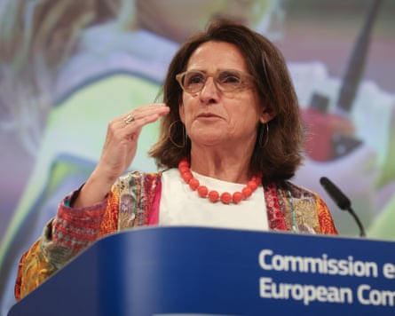
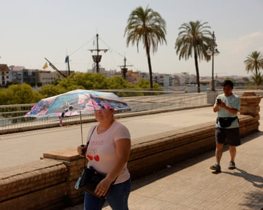

Political cowardice is hindering European efforts to face up to the effects of the climate crisis, even as the continent is pummelled by a record-breaking heatwave , the EU’s green transition chief has warned.
In an interview with the Guardian, Teresa Ribera said that although the effects of the climate emergency were becoming increasingly obvious, they were still not translating into proper action.
“When you see the map of Europe, it’s dreadful,” said Ribera, speaking amid a heatwave with unprecedented June temperatures from Spain and Portugal to the UK.
“We saw it in [the southern Spanish province of] Huelva, where it was 46C on Saturday. It’s 36C in Brussels and 38C in the east. They are absolutely terrible temperatures that have a very serious impact on ecosystems, on the economy and on health. And I think that there hasn’t yet been a real shift from the headlines about extreme meteorological phenomena to preparing people and understanding what needs to be done in the case of certain events.”
Speaking alongside Jessika Roswall, the EU commissioner for environment, water resilience and a competitive circular economy, Ribera said there was still a long way to go when it came to readying infrastructures and urban environments for the realities of the emergency.
A major part of the problem, she added, was that some political parties “continue to insist, quite vehemently, that climate change does not exist”, or else say that taking decisions to adapt to environmental realities is too expensive.
Teresa Ribera: ‘You can’t tell people that climate change is the great existential problem of our generation, and then say, “I’m sorry, we’re not going to do anything”’.Photograph: Olivier Hoslet/EPA
“Sorry, but it’ll be much more expensive if we don’t act,” said Ribera, the executive vice-president of the European Commission for clean, just and competitive transition and a former Spanish environment minister. “We all know that. You can’t tell people that climate change is the great existential problem of our generation, and then say, ‘I’m sorry, we’re not going to do anything’. That is what they are doing. And I think people see that, when it’s 46C in Huelva [in June]. That is not normal.”
Equally abnormal, she added, were last October’s torrential rains that caused the deadly floods that killed 229 people in the eastern Spanish region of Valencia.
“These are not isolated episodes,” she said. “But we are still in an ‘anecdotal’ phase – and that is very worrying. So I believe that yes, there still needs to be a coherent response.”
Ribera said many politicians were reluctant to stick their necks out or demand action for fear of alienating voters – something that was unhealthy and potentially dangerous for democracy.
“I think it’s a mistake to think that we have to hide the difficulties or that the problems will be solved by the market,” she said. “We don’t have to hide the difficulties, we have to understand them and manage them so that they are not so difficult. Often, political courage is needed to understand that there is a difficulty, and that instead of being small, you have to be big and find the solution shared by everyone. You need to face it with honesty.”
She added that denial – or a failure to deal with the difficult issues implicit in the climate emergency – would only contribute to the existing lack of trust in the political classes.
Many far-right parties in Europe and beyond treat the climate crisis as part of the culture wars . Spain’s Vox party is seeking to repeal the socialist-led government’s climate change and energy transition law and is pushing for greater reliance on nuclear power, while the Hungarian prime minister, Viktor Orbán, has described EU plans to tackle climate breakdown as a “utopian fantasy” that would only push up energy prices.
A woman holds an umbrella to shade herself from the sun in Seville, Spain.Photograph: Jon Nazca/Reuters
But Ribera said political consensus could be reached, pointing to the landmark €1.4bn deal struck last year between the Spanish government and the Andalucían regional authorities to protect the Doñana wetlands, which are one of Europe’s most important, and most threatened, carbon sinks.
Roswall, who was in Spain to visit the Doñana with Ribera, said one of the key challenges in preparing for the new climate reality was changing the way people consider, and use, water. Given the rising temperatures and droughts, she added, water needed to be seen, more than ever, as a vital and strategic resource. The commission recently published a strategy designed to restore and protect the water cycle and create “a sustainable, resilient, smart and competitive water economy” across Europe.
“When we talk about security – me and all of us – of course it’s not only guns and tanks and things, it’s also the nature that is protecting us,” she said. “It can be water, it can be borders … Investing in nature is also a security issue.”
The commissioner stressed the importance of water when it came to food production, energy generation and even the digital industries, which rely on big datacentres that use significant amounts of water. She also said areas such as the Doñana played a vital role in preventing fires and mitigating the effects of the climate emergency.
“[Water] is important for all of us,” she said. “It’s not only security, but it’s also our economy, which is also security, so everything is linked. But … I will say that we have taken water for granted too long. We have just counted that it will be here. We have not thought about it as a resource that is finite.”
As one of the most southerly countries on the fastest-warming continent, Spain is already feeling the effects of the climate emergency amid creeping desertification and record temperatures. The 46C recorded in Huelva last weekend was not far off Spain’s all-time record of 47.4C, recorded in another Andalucían town, Montoro, in August 2021.
Spain’s state meteorological agency, Aemet, said on Tuesday that June 2025 had “smashed records”, with an average temperature of 23.6C, 0.8C above the previous hottest June in 2017.
The monthly average was also 3.5C higher than the average over the period from 1991 to 2020, it said.